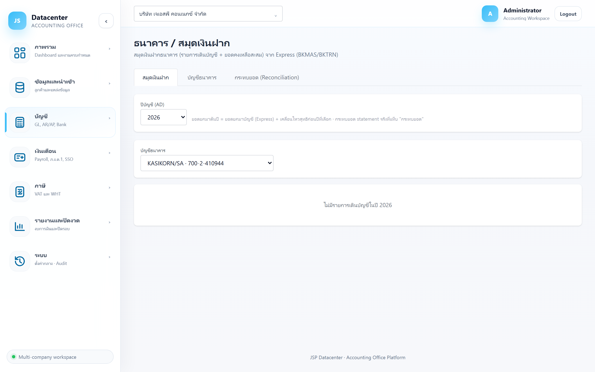
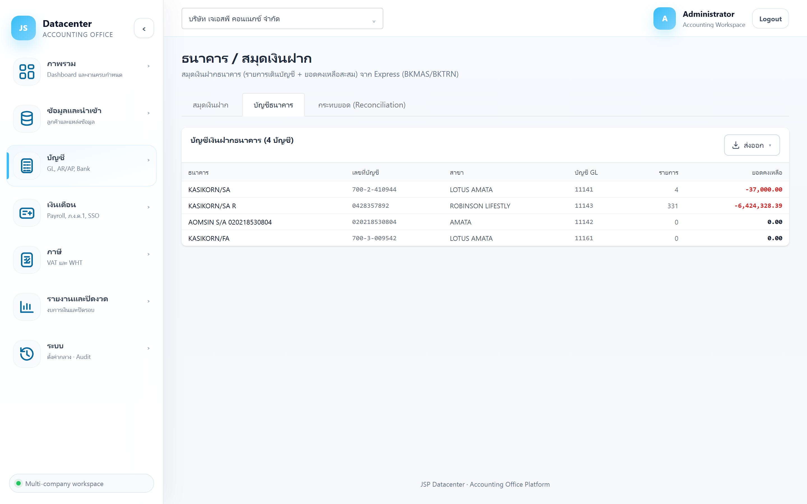
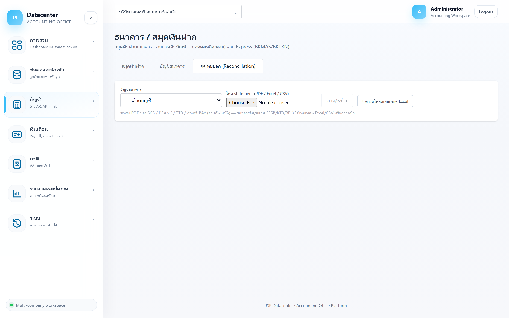

ธนาคาร / สมุดเงินฝาก
สมุดเงินฝากธนาคารจาก Express (BKMAS / BKTRN) พร้อมเครื่องมือ กระทบยอดกับ statement จริงของธนาคาร — อัปโหลด PDF/Excel แล้วระบบจับคู่รายการให้อัตโนมัติ และสร้างรายการปรับปรุงจากส่วนที่ไม่ตรง
สมุดเงินฝาก = ดูรายการเดินบัญชีตามสมุดของกิจการ · บัญชีธนาคาร = ทะเบียนบัญชีและยอดคงเหลือรวม · กระทบยอด = เทียบสมุดกับ statement ของธนาคารจริง
1. การเข้าใช้งาน
- เลือกบริษัทลูกค้า ที่แถบด้านบน
- เปิดเมนู บัญชี → ธนาคาร / สมุดเงินฝาก
- เลือกแท็บที่ต้องการ
2. แท็บ “สมุดเงินฝาก”
รายการเดินบัญชีของปีที่เลือก พร้อมยอดคงเหลือสะสมทีละรายการ — เหมือนสมุดคู่ฝากที่กิจการบันทึกเอง

| คอลัมน์ | ความหมาย |
|---|---|
| วันที่ | วันที่ของรายการ |
| เลขที่เช็ค | เลขเช็ค (ถ้ามี) ใช้ตามหาเช็คที่ยังไม่ขึ้นเงิน |
| รายการ / คู่ค้า | คำอธิบายรายการและคู่ค้าที่เกี่ยวข้อง |
| เงินเข้า / เงินออก | จำนวนเงินฝากเข้าและถอนออก |
| คงเหลือ | ยอดคงเหลือสะสมหลังรายการนั้น |
= ยอดยกมาของบัญชีใน Express + เคลื่อนไหวสุทธิของทุกปีก่อนหน้าปีที่เลือก — เลือกปีไหนก็ได้ยอดต้นงวดที่ถูกต้องเสมอ
3. แท็บ “บัญชีธนาคาร”
ทะเบียนบัญชีธนาคารทั้งหมดของบริษัท

| คอลัมน์ | ความหมาย |
|---|---|
| ธนาคาร / เลขที่บัญชี / สาขา | ข้อมูลบัญชีจาก Express |
| บัญชี GL | บัญชีในผังบัญชีที่ผูกกับบัญชีธนาคารนี้ — ใช้ตอนสร้างรายการปรับปรุง |
| รายการ | จำนวนรายการเดินบัญชีที่นำเข้ามา |
| ยอดคงเหลือ | ยอดคงเหลือล่าสุดตามสมุด |
4. แท็บ “กระทบยอด (Reconciliation)”
งานกระทบยอดธนาคารแบบครบวงจร — อัปโหลด statement ของธนาคารจริง แล้วให้ระบบจับคู่กับสมุด

4.1 ไฟล์ที่รองรับ
| ประเภทไฟล์ | รายละเอียด |
|---|---|
| PDF (อ่านอัตโนมัติ) | รองรับรูปแบบของ SCB · KBANK · TTB · กรุงศรี (BAY) — ระบบอ่านรายการออกมาให้เอง |
| Excel / CSV | สำหรับธนาคารอื่นหรือ PDF ที่เป็นภาพสแกน (เช่น GSB / KTB / BBL) — กด ⬇ ดาวน์โหลดเทมเพลต Excel แล้วกรอกตามรูปแบบ |
4.2 ขั้นตอนกระทบยอด
- เลือกบัญชีธนาคาร ที่จะกระทบยอด
- เลือกไฟล์ statement แล้วกด อ่าน/พรีวิว — ยังไม่บันทึกลงระบบ
- ตรวจผลพรีวิว 2 อย่าง (ดูหัวข้อถัดไป) แล้วแก้ยอดต้น/ปลายงวดถ้าจำเป็น
- กด ยืนยันบันทึก + จับคู่อัตโนมัติ — ระบบจับคู่รายการที่ตรงกันให้ทันที
- จัดการรายการที่ไม่ตรง ใน 2 กล่องด้านล่าง (จับคู่เอง หรือสร้างรายการปรับปรุง)
4.3 การตรวจสอบตอนพรีวิว
| การตรวจ | ความหมาย |
|---|---|
| ✓ ตรวจยอดผ่าน | ยอดต้นงวด + ฝาก − ถอน = ยอดปลายงวด ตรงกับที่ระบุใน statement — อ่านไฟล์ได้ครบถ้วน |
| ⚠ ตรวจยอดไม่ผ่าน | อ่านรายการได้ไม่ครบหรือยอดต้น/ปลายผิด — แก้ยอดในช่อง “ยอดต้นงวด/ยอดปลายงวด” ให้ตรงกับ statement ก่อนบันทึก |
| ✓ เลขบัญชีตรงกับบัญชีบริษัท | เลขบัญชีใน statement ตรงกับบัญชีที่เลือกไว้ |
| ⚠ เลขบัญชีไม่ตรงกัน | บันทึกไม่ได้ จนกว่าจะเลือกบัญชีให้ถูก — กันไม่ให้เอา statement ของบัญชีหนึ่งไปกระทบยอดอีกบัญชี |
การอ่าน PDF อาจตกหล่นบางบรรทัดโดยไม่รู้ตัว ระบบจึงบวกยอดต้น + รายการทั้งหมด แล้วเทียบกับยอดปลายที่ statement บอกไว้ ถ้าตรง แปลว่าอ่านครบแน่นอน
4.4 ตารางรอบนำเข้า statement
| คอลัมน์ | ความหมาย |
|---|---|
| ธนาคาร | ธนาคารที่อ่านได้จากไฟล์ (มี ⚠ ถ้าเลขบัญชีไม่ตรง) |
| งวด | ช่วงวันที่ของ statement |
| รายการ | จำนวนรายการทั้งหมดในไฟล์ |
| จับคู่ | จับคู่ได้กี่รายการ จากทั้งหมดกี่รายการ |
| ตรวจยอด | ✓ = ผ่าน · ⚠ = ไม่ผ่าน |
| เปิด / ลบ | เปิดดูผลกระทบยอดของรอบนั้น หรือลบรอบทิ้ง (ถามยืนยันก่อน) |
4.5 ผลการกระทบยอด
เมื่อกดเปิดรอบนำเข้า จะเห็นสรุป 3 ตัวเลขและกล่องรายการ 3 กล่อง
| ตัวเลขสรุป | ความหมาย |
|---|---|
| ยอดปลายสมุด (book) | ยอดคงเหลือตามสมุดของกิจการ |
| ยอดปลาย statement | ยอดคงเหลือตามธนาคาร |
| ผลต่างหลังกระทบยอด | ส่วนต่างที่ยังอธิบายไม่ได้ — เป้าหมายคือทำให้เป็นศูนย์ |
| กล่องรายการ | ใช้ทำอะไร |
|---|---|
| จับคู่แล้ว | รายการที่ตรงกันทั้งสองฝั่ง — ถ้าจับคู่ผิด กด ปลดคู่ เพื่อแยกออก |
| ในธนาคาร ไม่อยู่ในสมุด | ธนาคารตัดแล้วแต่กิจการยังไม่ลงบัญชี เช่น ค่าธรรมเนียม, ดอกเบี้ยรับ, ภาษีหัก ณ ที่จ่ายดอกเบี้ย → เลือกรายการเหล่านี้เพื่อ สร้างรายการปรับปรุง |
| ในสมุด ไม่อยู่ใน statement | กิจการลงบัญชีแล้วแต่ธนาคารยังไม่ตัด เช่น เงินฝากระหว่างทาง, เช็คค้างจ่าย → ปกติปล่อยไว้ให้ไปตัดในงวดถัดไป |
4.6 จับคู่เอง
ถ้าระบบจับคู่ไม่ได้เอง (เช่น จำนวนเงินตรงแต่วันที่ต่างกัน): ที่กล่อง “ในธนาคาร ไม่อยู่ในสมุด” กด เลือกจับคู่ ที่รายการฝั่ง statement แล้วไปกด จับคู่ ที่รายการคู่กันในกล่อง “ในสมุด ไม่อยู่ใน statement”
4.7 สร้างรายการปรับปรุง
- ติ๊กเลือกรายการฝั่งธนาคารที่ต้องบันทึกเพิ่ม (เช่น ค่าธรรมเนียม, ดอกเบี้ยรับ)
- เลือก บัญชีธนาคาร (GL) — บัญชีเงินฝากที่จะเดบิต/เครดิต
- เลือก บัญชีคู่ — เช่น ค่าธรรมเนียมธนาคาร หรือ ดอกเบี้ยรับ
- กดปุ่มสร้าง — ระบบสร้างรายการปรับปรุงให้ไปปรากฏที่เมนูกระดาษทำการปิดงบ
รายการที่สร้างจะเข้าไปอยู่ในรายการปรับปรุงปิดงบและกระทบงบการเงินจริง — ถ้าเลือกบัญชีผิดต้องไปแก้ที่เมนูกระดาษทำการปิดงบ
5. ปัญหาที่พบบ่อย
| อาการ | สาเหตุและวิธีแก้ |
|---|---|
| อ่าน PDF ไม่ออก / ได้ 0 รายการ | เป็น PDF สแกน (ภาพ) หรือธนาคารที่ยังไม่รองรับ — ใช้เทมเพลต Excel แทน |
| ตรวจยอดไม่ผ่าน (⚠) | อ่านรายการไม่ครบหรือยอดต้น/ปลายไม่ถูก — แก้ยอดต้น-ปลายให้ตรง statement หรือเปลี่ยนไปใช้ Excel |
| บันทึกไม่ได้ ขึ้นว่าเลขบัญชีไม่ตรง | เลือกบัญชีธนาคารของบริษัทให้ตรงกับเลขบัญชีใน statement ก่อน |
| ผลต่างหลังกระทบยอดไม่เป็นศูนย์ | ยังมีรายการค้างในกล่องใดกล่องหนึ่ง — ไล่จับคู่ให้ครบ หรือสร้างรายการปรับปรุงสำหรับรายการที่ยังไม่ได้ลงบัญชี |
| ช่องเลือกบัญชีธนาคารว่าง | ยังไม่ได้นำเข้าข้อมูลธนาคาร (BKMAS) จาก Express |
ทำงานภาษีต่อได้ที่ ภาษีมูลค่าเพิ่ม (ภ.พ.30) →